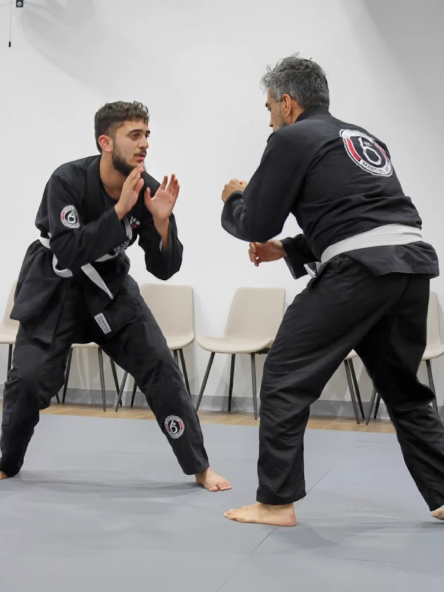
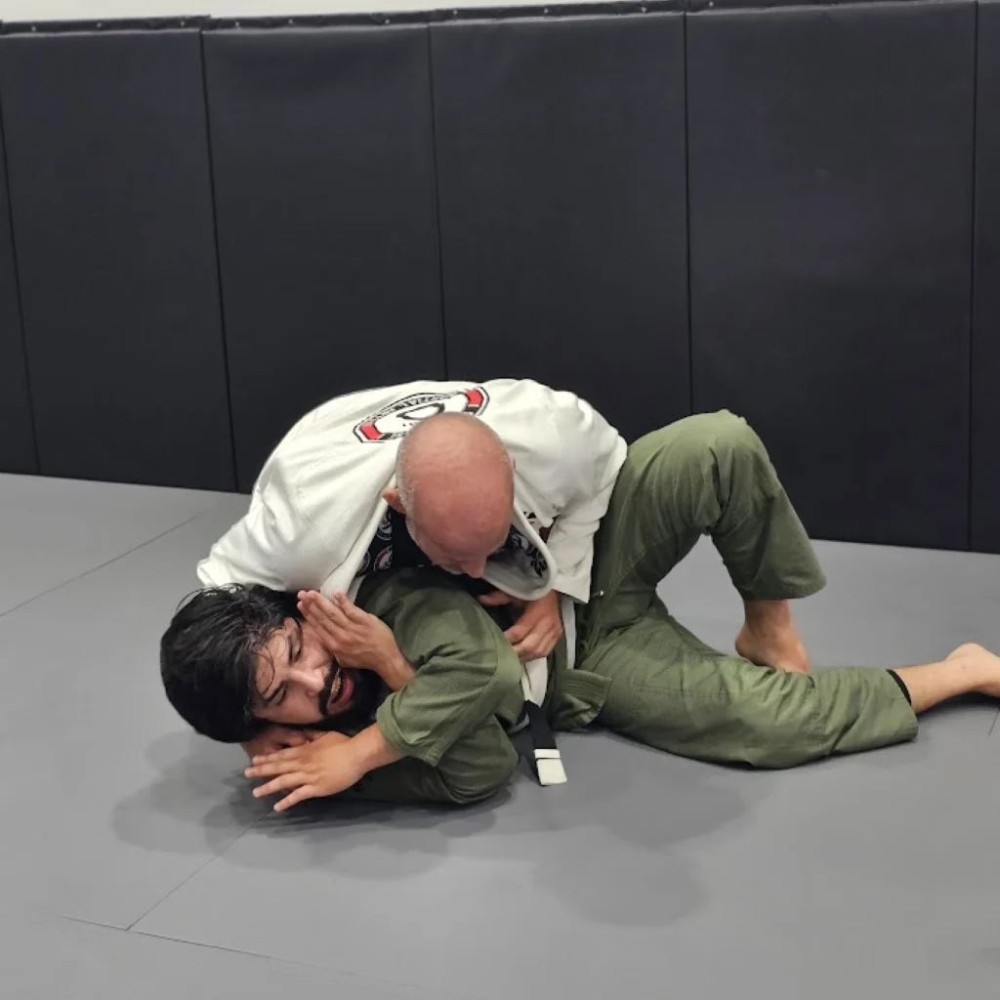
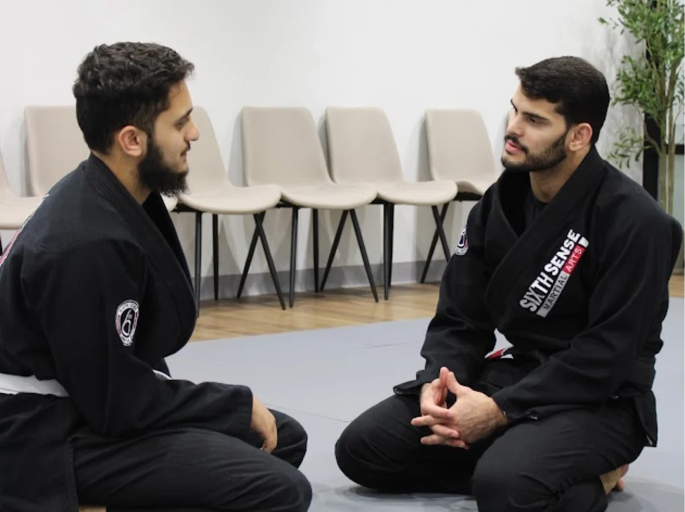
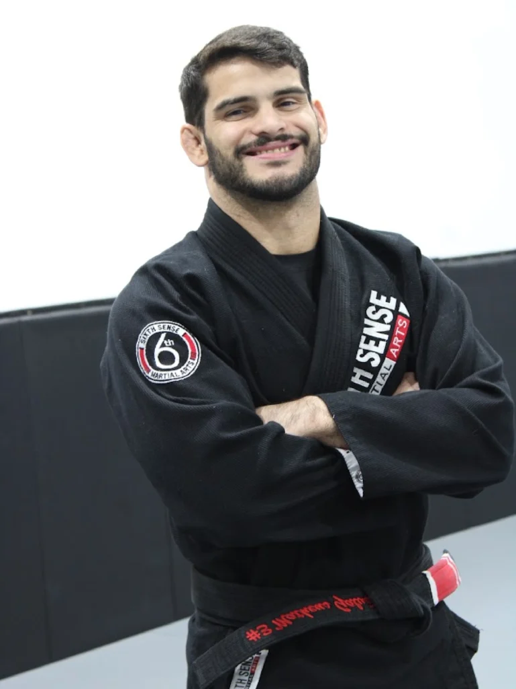

Full Body Fitness
Our Valley Ranch – Coppell adult Brazilian Jiu-Jitsu classes work you from head to toe, in every class. Build muscle and burn fat everywhere.

Brazilian Jiu-Jitsu builds muscles you never even knew you had. It's a full-body workout combining cardio and resistance to build lean muscle, fast.
You'll also boost your energy as your cardio increases, boost your coordination & balance, and get more flexible, too.
These Valley Ranch – Coppell adult Brazilian Jiu-Jitsu classes are calorie-crushing, action-packed sessions.

In our Valley Ranch – Coppell Adult BJJ classes, we don't just help you get fitter, safer, and stronger. We help you build life-changing skills to excel at life – in your relationships, career, and family.
Focus. Confidence. Discipline. Goal setting and more. Every adult Brazilian Jiu-Jitsu class in Valley Ranch – Coppell enriches you and makes you stronger – inside and out.
We also help you stay safe with real-world self-defense. These are tactics that work even against attackers larger than you.
FREE
Adults Brazilian Jiu-Jitsu Class in Valley Ranch-Coppell!

An amazing side-effect of our Valley Ranch – Coppell adult Brazilian Jiu-Jitsu classes is stress & pain relief. The full-body workouts erase stress from your body.
The core-building Brazilian Jiu-Jitsu techniques help your body function as it was meant to, meaning less strain on your back, neck, shoulders, and knees. Stretching and muscle-building improves range of motion. Improving oxygen flow is known to reduce Cortisol levels, or stress hormone, in the body.
Plus, after such awesome workouts, you'll sleep better too.
Our Valley Ranch – Coppell adult Brazilian Jiu-Jitsu classes work you from head to toe, in every class. Build muscle and burn fat everywhere.
In our Valley Ranch – Coppell Brazilian Jiu-Jitsu training, your practice and hard work builds focus & discipline. This discipline lets you get more done in your life outside our school, too.
Nearly every Brazilian Jiu-Jitsu technique starts at your core. Your core will get stronger, which can also alleviate back, neck, leg, and shoulder pain. A lot of times pain comes from the rest of our body making up for our cores.
One of the focuses of our Valley Ranch – Coppell Brazilian Jiu-Jitsu Studio is to unite adults from all over Valley Ranch – Coppell. We support each other, cheer each other on, and help each other grow. Our tight knit community will welcome you openly. We can't wait.
As you master our adult Brazilian Jiu-Jitsu techniques you may have thought were impossible, make friends, smash your goals, and get fit, your confidence will soar. This pours into your relationships, your career, your friendships, and your family life.
Our instructors care. A lot. They'll help you dig deep to find the strength and courage to tackle your goals and discover your strength. Martial arts has provided guidance for millions of adults over thousands of years. Now you get to experience this too.
Fewer things in life melt stress more than Brazilian Jiu-Jitsu. Come with all your troubles, leave care free.
Our Brazilian Jiu-Jitsu classes are packed with action & fun. The more fun you have, the more you want to train, and the faster you get results. Every class is full of smiles and laughter.
FREE
Adults Brazilian Jiu-Jitsu Class in Valley Ranch-Coppell!

Most frequent questions and answers about our adult Brazilian Jiu-Jitsu program in Valley Ranch – Coppell.
Not at all. Our Valley Ranch – Coppell adult Brazilian Jiu-Jitsu classes are designed to meet you exactly where you are. You'll build strength, cardio, and mobility as you train, not before you start.
Just comfortable workout clothes, water, and an open mind. We'll provide everything else you need for your first class, including a gi if your program uses one.
Absolutely. Brazilian Jiu-Jitsu is a low-impact, technique-first martial art that adults of every age train safely for decades. Many of our adult students started well into their 40s, 50s, and beyond.
Every sport carries some risk, but our instructors teach controlled, technique-focused training and adjust intensity to your experience level. Most days you'll leave sore, not hurt.
No experience is required. Most of our adult students walk in as complete beginners. We'll teach you everything from the fundamentals up.
Two to three classes a week is a great starting pace for most adults. As your body adapts and you catch the bug, many students train more often.
Not for your first class or two. Come try a class first. Once you know Brazilian Jiu-Jitsu is for you, we'll help you get properly fitted for a gi.
Gi Brazilian Jiu-Jitsu is trained in the traditional uniform, using grips on the fabric for control and submissions. No-Gi is trained in shorts and a rash guard, relying more on speed, pressure, and body control. We'll help you find which style you enjoy most.
Grab your free class pass above or give us a call. We'll get you scheduled for your first Valley Ranch – Coppell adult Brazilian Jiu-Jitsu class, no obligation.
FREE
Adults Brazilian Jiu-Jitsu Class in Valley Ranch-Coppell!